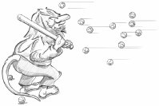

Chapter 7. Event Processing

Events are generated by the window system or by Qt itself in response to various occurrences. When the user presses or releases a key or mouse button, a key or mouse event is generated; when a window is shown for the first time, a paint event is generated to tell the newly visible window that it needs to draw itself. Most events are generated in response to user actions, but some, like timer events, are generated independently by the system.
When we program with Qt, we seldom need to think about events, because Qt widgets emit signals when something significant occurs. Events become useful when we write our own custom widgets or when we want to modify the behavior of existing Qt widgets.
Events should not be confused with signals. As a rule, signals are useful when using a widget, whereas events are useful when implementing a widget. For example, when we are using QPushButton, we are more interested in its clicked() signal than in the low-level mouse or key events that caused the signal to be emitted. But if we are implementing a class like QPushButton, we need to write code to handle mouse and key events and emit the clicked() signal when necessary.
 |